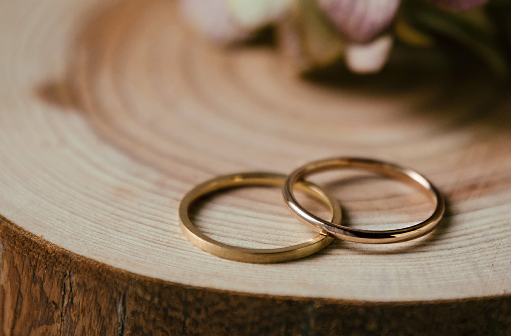
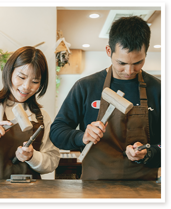
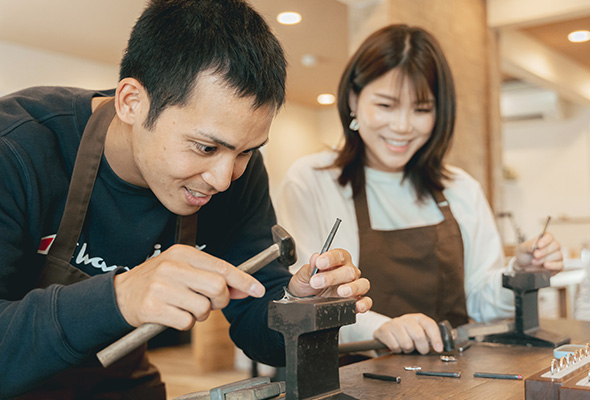
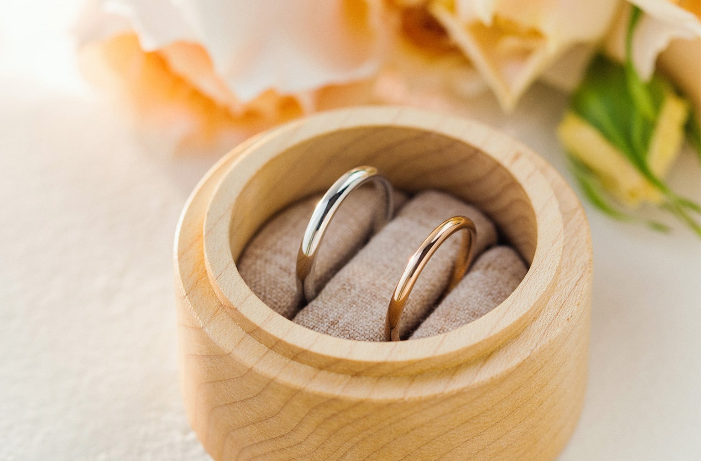
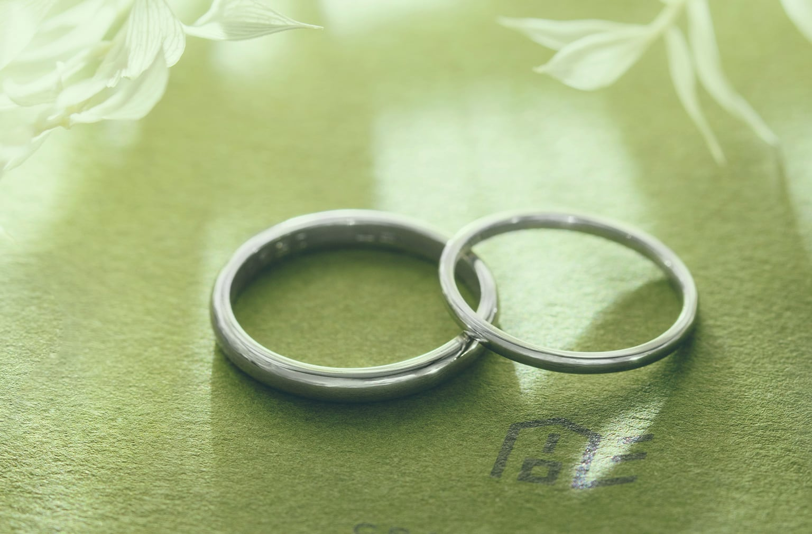
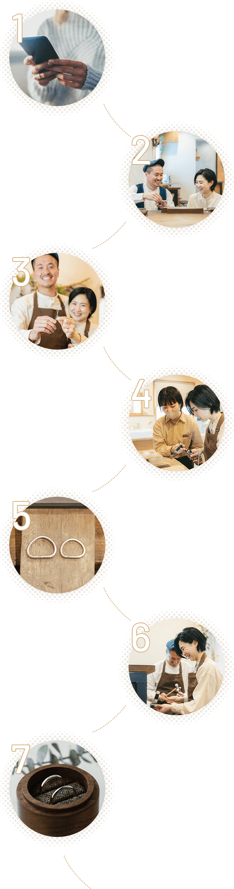
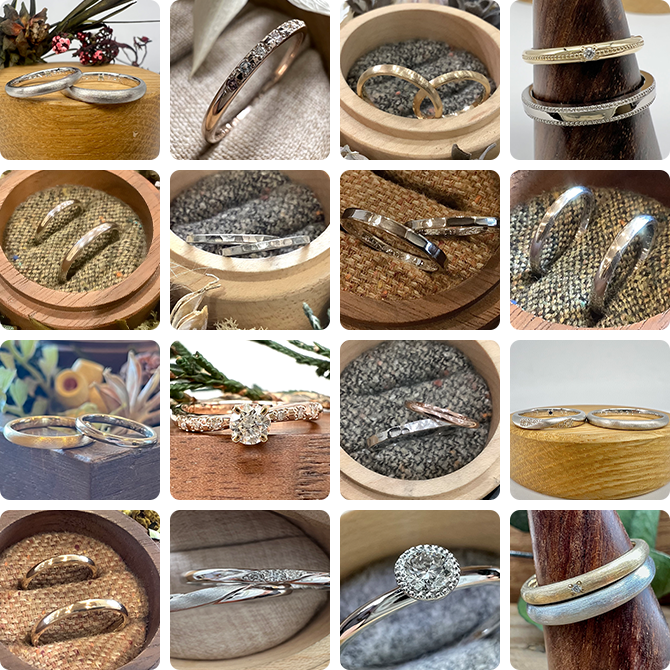
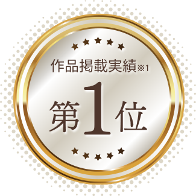
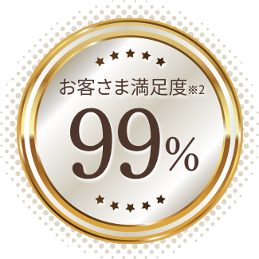
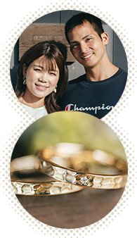

楽しさ＆一生の思い出
お客さまご自身の手で作るからこそ、指輪が完成した時の達成感や感動もひとしおです。

ふたりの手でつくる、
ふたりだけの結婚指輪。

手作り結婚指輪
1本 98,000円〜制作 約3時間 最短当日お持ち帰り石留め・オプション加工は4〜5週間
ふたりで作る、という選び方
ご自身の手で金属の棒を丸めたり磨いたりして手作りする指輪のことです。
既製品やオーダーメイドとは異なり、指輪が完成した時の達成感や感動はひとしお。指輪ができる過程まで、特別な思い出として残すことができます。
鎌倉彫金工房では、お客さまに担当いただく工程が多い鍛造製法を採用しています。


手作り結婚指輪のポイント
お客さまご自身の手で作るからこそ、指輪が完成した時の達成感や感動もひとしおです。
木を基調とした洗練されたインテリアと、アットホームな空間で、じっくりと手作りの時間を楽しめます。

鎌倉、横浜元町、大阪中崎町、東京蔵前。指輪作りとあわせて散策も楽しめる4つの工房から選べます。

当日は熟練の職人が丁寧にサポート。ふたりらしさを加える、さまざまなオプション加工も用意しています。

ジュエリー職人が、お客さま一人ひとりに合わせてお手伝いします。

デザインと価格
素材、幅、かたち、仕上げ。手にした時の心地よさを大切に、おふたりそれぞれに似合う一本を。


※価格は1本あたりの制作事例です。素材・幅・オプションにより異なります。
コース情報
制作にかかる時間やお受け取り、完成後のお手入れまで。ご予約の前に知っておきたいことをまとめました。
鍛造製法で作る
お客さまの指輪作りは、熟練のジュエリー職人が丁寧にサポートします。
サンプルや先輩作品を見ながら、素材やデザインを選びます。
金属を熱してやわらかくし、曲げて端と端をつなげます。
木づちでカンカンたたきながら、いびつなリングを真円に整えます。
複数のヤスリを使って仕上げます。オプション加工がない場合は、その日のうちに持ち帰れます。

工房の実績
2022年には、姉妹店を含め14,060本の指輪が工房で手作りされました。



お客さまの声

一緒に作った時間が、思い出になって残る
一緒にいなくても指輪を見るだけで相手のことや作った日のことを思い出せます。
S様

指輪作りは初めてでしたが、とても楽しかったです
没頭して、完成した後は達成感もありました。最後に光る瞬間はテンションが上がりました。
H様

自慢できますよね、棒から作ったんですよって
おしゃれな工房で驚きました。周りの人にも「こんなにキレイにできるんだ」と言ってもらえました。
M様
よくあるご質問
ご心配いりません。経験豊富なジュエリー職人が完成までしっかりとサポートします。
結婚指輪は約3時間で完成します。石留めやその他のオプション加工がある場合は、4〜5週間程度お預かりします。
結婚指輪・婚約指輪は永久保証です。仕上げ直し、サイズ調整、変形直し、石の留め直し、クリーニングを期限なしで承ります（有料の場合もあります）。
はい。実物サンプルを見ながら、素材やデザインをご相談いただけます。
空席案内・ご予約
鎌倉、横浜元町、大阪中崎町、東京蔵前。お好きな街の工房をお選びください。